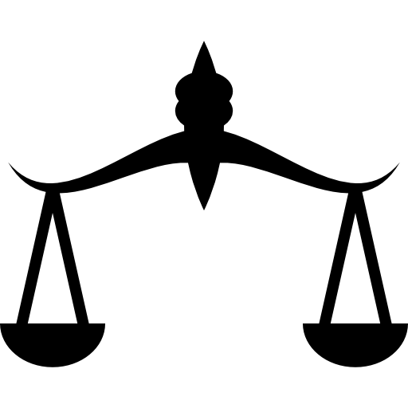

OUR MISSION
Our values are our strength.

Truth and Equality
The biggest value which we carry is
being honest and treat everyone with equality in all aspects.

Rise by raising others.
We gradually develop
By helping others.
Work with no appreciations
Don't wait for the opportunities and appreciations
Do what you think is right.
JAI HIND
Work for the upliftment of the country
While carrying on the legacy
Believe it or Not!
Your innovation= Development of India!
Think now...
OUR PROJECTS
One of the most important aspiring fact of FGC is it’s new ideas with an exciting strategy that inspires young generations to think damn wider.In this aspect FGC is planning a number of new projects in the fiscal year of 2018-2021.
Project Samrajya:
Project Samrajya has been launched in order to establish FGC’s dynasty.Framtid group is planning to expand its wing with more than 200+ national and international companies which would pave a way for Framtid Group to get enter into the international market.Due to this,a number of young people would get an opportunity to implement their ideas and would become a successful individuals in various fields,All this plans has been enclosed in AACC(Asset Acceptance Capital Corporation) strategic plan for the year 2018-2021.
Project Balarama:
Project Balarama has been implemented by FGC for the transformation to be made in the field of education.FGC provides business education for the students right from the age of 13, which would provide all children to get a basic knowledge about the business and its terminologies, so that He\She may be able to shine in the field of business than others.FGC has chosen five institutions in the state of Tamil Nadu for project Balarama.This project will be implemented from the academic year of 2018-2019.Eventhough many institutions had shown interest,FGC has authorized only five for its project.
Project Varna:
Project Varna deals with the enlightening of lives especially in the field of women empowerment.FGC always has a wide angle in the empowerment of human lives.Project Varna has been legally approved by the Board Of Directors and the project is under construction.Project Varna is capable of transforming the down rotten people’s lives into an Millionaire’s life.This would be a revolution in the field of women empowerment and it is estimated that over 4 million people would be benefitted within a time period of 1000 days right from its date of launch.It has been finalized that Project Varna would be implemented first in the state of Kerala with a collaboration with Government of Kerala.
Project Smile:
Project smile makes the life simple and lives of our members a paradise.Project Smile is an e-Commerce platform and is expected to be launched by the end of the year 2019.Project Smile would make the lives of our members a valuable one in terms of making money.Project Smile would act as a platform for the people to sell their products at the right price and gives them capital and happiness.Project Smile would be the India’s largest e-commerce platform by the year 2025 with more than 2 million products.
Project Green:
All the hardware products which are to be made by Framtid Group will be manufactured under the project Green.Project Green ensures the quality products which would not harm the environment.FGC is one of the few companies which are in Tier-1 category of National Green Tribunal of India.The innovative ideas which are associated with environmental issues will be funded huge under the capital of project Green.Under Project Green, bio products will be manufactured.